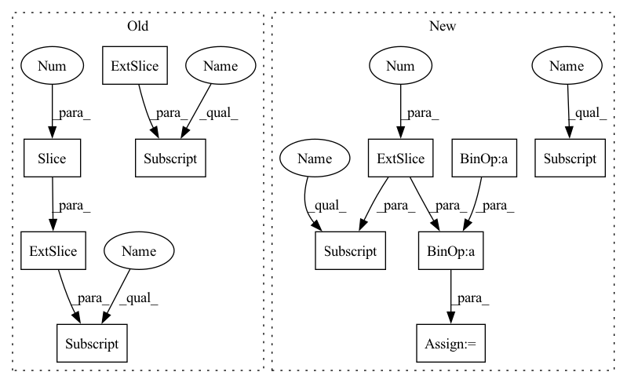

Pattern ID :22693

Before Change
def _forward(self, x):
// Transform outputs to angle and prepare prediction
angle = super()._forward(x[:,:2]).squeeze(1)
kappa = torch.abs(x[:,2]) + eps_like(x)
return torch.stack((angle, kappa), dim=1)
class ZenithReconstructionWithKappa(ZenithReconstruction):
After Change
def _forward(self, x):
// Transform outputs to angle and prepare prediction
kappa = torch.linalg.vector_norm(x, dim=1) + eps_like(x)
angle = torch.atan2(x[:,1], x[:,0])
angle = torch.where(angle < 0, angle + 2 * np.pi, angle) // atan(y,x) -> [-pi, pi]
return torch.stack((angle, kappa), dim=1)
class AzimuthReconstruction(AzimuthReconstructionWithKappa):
In pattern: SUPERPATTERN
Frequency: 3
Non-data size: 11
Instances
Fragment ID: 72074506
Project Name: graphnet-team/graphnet
Commit Name: c2cefa65450c1e10b541e9b0538358e02e486a06
Time: 2021-11-16
Author: andreas.sogaard@gmail.com
File Name: src/gnn_reco/models/task/reconstruction.py
M Class Name: AzimuthReconstructionWithKappa
N Class Name: AzimuthReconstructionWithKappa
M Method Name: _forward(2)
N Method Name: _forward(2)
M Parent Class: Task
N Parent Class: AzimuthReconstruction
M File Name: src/gnn_reco/models/task/reconstruction.py
N File Name: src/gnn_reco/models/task/reconstruction.py
M Start Line: 37
M End Line: 38
N Start Line: 14
N End Line: 16
'>
Before Change
if fv_alter is None:
v_in = fv
else:
v_in = fv * dec[:, :, 0].unsqueeze(-1) + fv_alter * dec[:, :, 1].unsqueeze(-1)
fused = self.fuse(v_in, fi)
out, hc = self.rnn(fused) if prev is None else self.rnn(fused, prev)
After Change
prev = (prev[0].transpose(1, 0).contiguous(), prev[1].transpose(1, 0).contiguous())
// Select between fv and fv_alter
v_in = fv * dec[:, :, :1] + fv_alter * dec[:, :, -1:] if fv_alter is not None else fv
fused = self.fuse(v_in, fi)
out, hc = self.rnn(fused) if prev is None else self.rnn(fused, prev)
out = self.rnn_drop_out(out)
'>
Fragment ID: 72074504
Project Name: mingyuyng/visual-selective-vio
Commit Name: a8d443c68112716ac78b026ac1349e8f92c70641
Time: 2022-07-11
Author: mingyuy@umich.edu
File Name: model.py
M Class Name: Pose_RNN
N Class Name: Pose_RNN
M Method Name: forward(6)
N Method Name: forward(6)
M Parent Class: nn.Module
N Parent Class: nn.Module
M File Name: model.py
N File Name: model.py
M Start Line: 181
M End Line: 189
N Start Line: 184
N End Line: 184
'>
Before Change
def _forward(self, x):
// Transform outputs to angle and prepare prediction
angle = super()._forward(x[:,:2]).squeeze(1)
kappa = torch.abs(x[:,2]) + eps_like(x)
return torch.stack((angle, kappa), dim=1)
class ZenithReconstructionWithKappa(ZenithReconstruction):
After Change
def _forward(self, x):
// Transform outputs to angle and prepare prediction
kappa = torch.linalg.vector_norm(x, dim=1) + eps_like(x)
angle = torch.atan2(x[:,1], x[:,0])
angle = torch.where(angle < 0, angle + 2 * np.pi, angle) // atan(y,x) -> [-pi, pi]
return torch.stack((angle, kappa), dim=1)
class AzimuthReconstruction(AzimuthReconstructionWithKappa):
'>
Fragment ID: 72074495
Project Name: icecube/graphnet
Commit Name: c2cefa65450c1e10b541e9b0538358e02e486a06
Time: 2021-11-16
Author: andreas.sogaard@gmail.com
File Name: src/gnn_reco/models/task/reconstruction.py
M Class Name: AzimuthReconstructionWithKappa
N Class Name: AzimuthReconstructionWithKappa
M Method Name: _forward(2)
N Method Name: _forward(2)
M Parent Class: Task
N Parent Class: AzimuthReconstruction
M File Name: src/gnn_reco/models/task/reconstruction.py
N File Name: src/gnn_reco/models/task/reconstruction.py
M Start Line: 37
M End Line: 38
N Start Line: 14
N End Line: 16